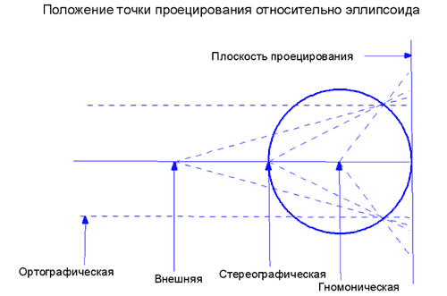
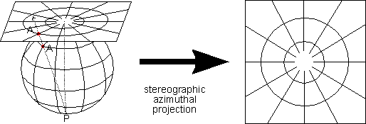
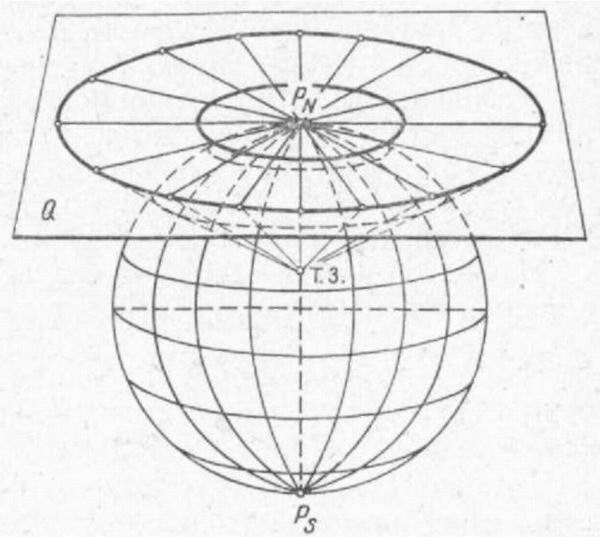
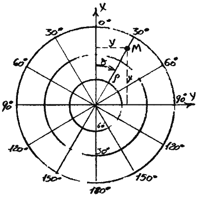
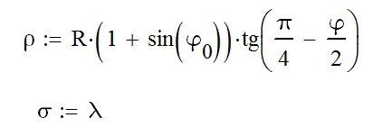

Aзимутальная (стереографическая) проекция
Эта проекция аналогична полярной ориентировке Стереографической проекции на сфероиде. Центральной точкой проекции является либо Северный полюс, либо Южный полюс. Это единственная нормальная азимутальная проекция, которая является равноугольной. Полярная стереографическая проекция используется для всех регионов, не включенных в систему координат поперечной проекции Меркатора, регионов к северу от 84° СШ и к югу от 80° ЮШ. Для этих регионов используется универсальная полярная стереографическая проекция UPS.
Метод проецирования - aзимутальная перспективная проекция, в которой точка проецирования расположена на противоположном полюсе (стереографическая проекция). Линии широты представляют собой концентрические окружности. Расстояние между окружностями увеличивается по мере удаления от центральной точки (полюса).
Точка касания - eдинственная точка, либо Северный полюс, либо Южный полюс. Если плоскость является секущей, а не касательной, линией сечения земной поверхности является линия широты.
Линейные элементы картографической сетки - все меридианы.
Свойства:
- Форма Равноугольная проекция; точное отображение форм местности.
- Площадь Чем дальше от полюса, тем больше масштаб площадей.
- Направление Истинное направление от полюса. Местные углы везде являются истинными.
- Расстояние Масштаб увеличивается по мере удаления от центра. Если в проекции есть стандартная параллель (при секущей плоскости проекции), по линии этой широты сохраняется истинный масштаб, а масштаб ближе к полюсам уменьшается (меньше 1).
- Ограничения Как правило, не распространяется дальше, чем на 90° от центральной точки (полюса) из-за увеличивающихся искажений линейного масштаба и площадей. Области использования Полярные области (равноугольная проекция).
В системе координат UPS коэффициент масштаба на полюсе равен 0,994, что соответствует используемой широте истинного масштаба (стандартной параллели) - 81°06′52,3" СШ или ЮШ.
Координаты проекции расчитываются по формулам:
